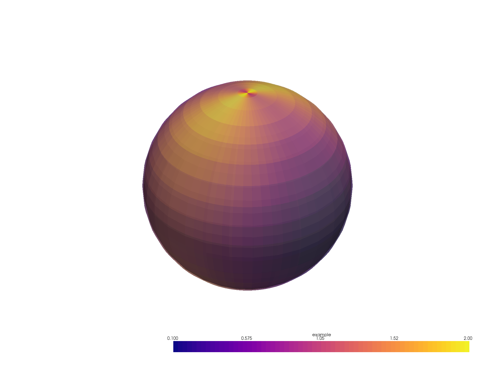
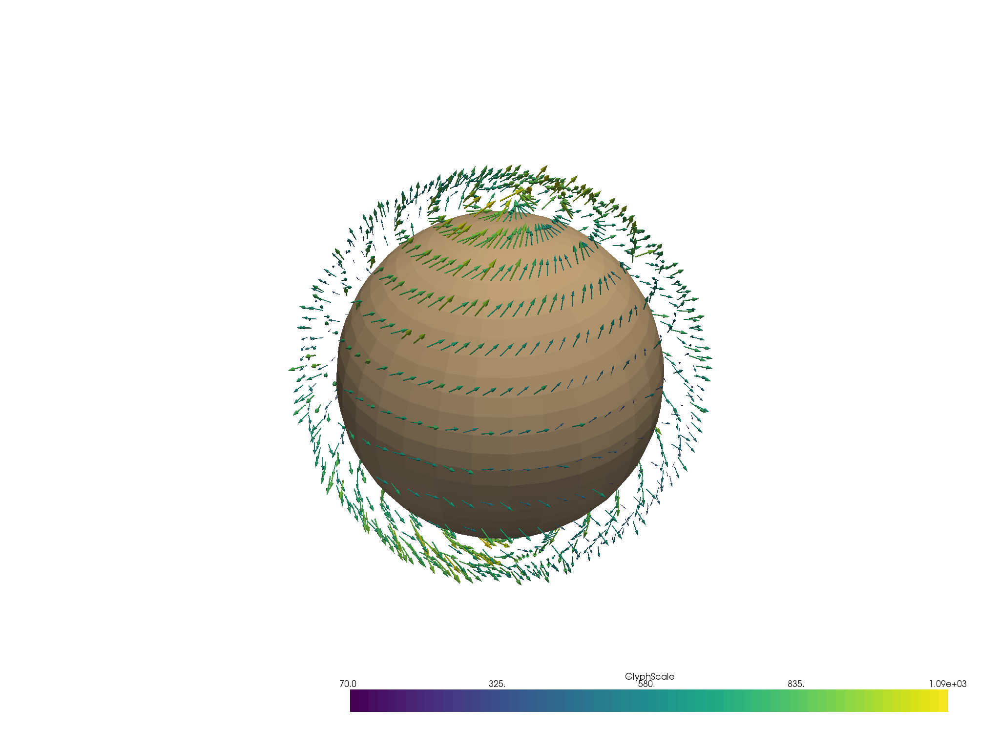
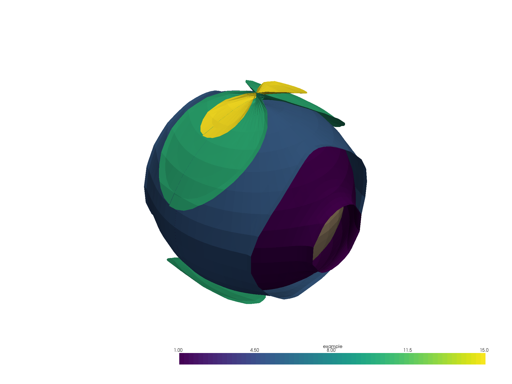

Note
Click here to download the full example code
Plot data in spherical coordinates¶
Generate and visualize meshes from data in longitude-latitude coordinates.
import pyvista as pv
import numpy as np
def _cell_bounds(points, bound_position=0.5):
"""
Calculate coordinate cell boundaries.
Parameters
----------
points: numpy.array
One-dimensional array of uniformy spaced values of shape (M,)
bound_position: bool, optional
The desired position of the bounds relative to the position
of the points.
Returns
-------
bounds: numpy.array
Array of shape (M+1,)
Examples
--------
>>> a = np.arange(-1, 2.5, 0.5)
>>> a
array([-1. , -0.5, 0. , 0.5, 1. , 1.5, 2. ])
>>> cell_bounds(a)
array([-1.25, -0.75, -0.25, 0.25, 0.75, 1.25, 1.75, 2.25])
"""
assert points.ndim == 1, "Only 1D points are allowed"
diffs = np.diff(points)
delta = diffs[0] * bound_position
bounds = np.concatenate([[points[0] - delta], points + delta])
return bounds
# First, create some dummy data
# Approximate radius of the Earth
RADIUS = 6371.0
# Longitudes and latitudes
x = np.arange(0, 360, 5)
y = np.arange(-90, 91, 10)
y_polar = 90.0 - y # grid_from_sph_coords() expects polar angle
xx, yy = np.meshgrid(x, y)
# x- and y-components of the wind vector
u_vec = np.cos(np.radians(xx)) # zonal
v_vec = np.sin(np.radians(yy)) # meridional
# Scalar data
scalar = u_vec ** 2 + v_vec ** 2
# Create arrays of grid cell boundaries, which have shape of (x.shape[0] + 1)
xx_bounds = _cell_bounds(x)
yy_bounds = _cell_bounds(y_polar)
# Vertical levels
# in this case a single level slightly above the surface of a sphere
levels = [RADIUS * 1.01]
Create a structured grid
grid_scalar = pv.grid_from_sph_coords(xx_bounds, yy_bounds, levels)
# And fill its cell arrays with the scalar data
grid_scalar.cell_arrays["example"] = np.array(scalar).swapaxes(-2, -1).ravel("C")
# Make a plot
p = pv.Plotter()
p.add_mesh(pv.Sphere(radius=RADIUS))
p.add_mesh(grid_scalar, clim=[0.1, 2.0], opacity=0.5, cmap="plasma")
p.show()

Out:
[(24751.49083514534, 24751.49083514534, 24751.49083514534),
(0.0, 0.0, 0.0),
(0.0, 0.0, 1.0)]
Visualize vectors in spherical coordinates Vertical wind
w_vec = np.random.rand(*u_vec.shape)
wind_level = [RADIUS * 1.2]
# Sequence of axis indices for transpose()
# (1, 0) for 2D arrays
# (2, 1, 0) for 3D arrays
inv_axes = [*range(u_vec.ndim)[::-1]]
# Transform vectors to cartesian coordinates
vectors = np.stack(
[
i.transpose(inv_axes).swapaxes(-2, -1).ravel("C")
for i in pv.transform_vectors_sph_to_cart(
x,
y_polar,
wind_level,
u_vec.transpose(inv_axes),
-v_vec.transpose(inv_axes), # Minus sign because y-vector in polar coords is required
w_vec.transpose(inv_axes),
)
],
axis=1,
)
# Scale vectors to make them visible
vectors *= RADIUS * 0.1
# Create a grid for the vectors
grid_winds = pv.grid_from_sph_coords(x, y_polar, wind_level)
# Add vectors to the grid
grid_winds.point_arrays["example"] = vectors
# Show the result
p = pv.Plotter()
p.add_mesh(pv.Sphere(radius=RADIUS))
p.add_mesh(grid_winds.glyph(orient="example", scale="example", tolerance=0.005))
p.show()

Out:
[(31555.50293493967, 31548.72754431467, 31546.56641150217),
(2.29638671875, -4.47900390625, -6.64013671875),
(0.0, 0.0, 1.0)]
Isurfaces of 3D data in spherical coordinates
# Number of vertical levels
nlev = 10
# Dummy 3D scalar data
scalar_3d = (
scalar.repeat(nlev).reshape((*scalar.shape, nlev)) * np.arange(nlev)[np.newaxis, np.newaxis, :]
).transpose(2, 0, 1)
z_scale = 10
z_offset = RADIUS * 1.1
# Now it's not a single level but an array of levels
levels = z_scale * (np.arange(scalar_3d.shape[0] + 1)) ** 2 + z_offset
# Create a structured grid by transforming coordinates
grid_scalar_3d = pv.grid_from_sph_coords(xx_bounds, yy_bounds, levels)
# Add data to the grid
grid_scalar_3d.cell_arrays["example"] = np.array(scalar_3d).swapaxes(-2, -1).ravel("C")
# Create a set of isosurfaces
surfaces = grid_scalar_3d.cell_data_to_point_data().contour(isosurfaces=[1, 5, 10, 15])
# Show the result
p = pv.Plotter()
p.add_mesh(pv.Sphere(radius=RADIUS))
p.add_mesh(surfaces)
p.show()

Out:
[(29807.472094298726, 29799.23191869352, 29799.23191869352),
(8.240175605204513, -4.547473508864641e-13, 0.0),
(0.0, 0.0, 1.0)]
Total running time of the script: ( 0 minutes 5.029 seconds)